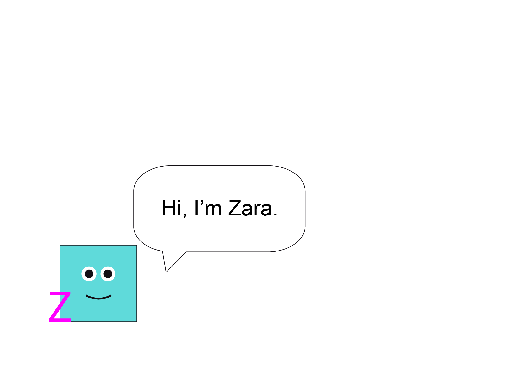
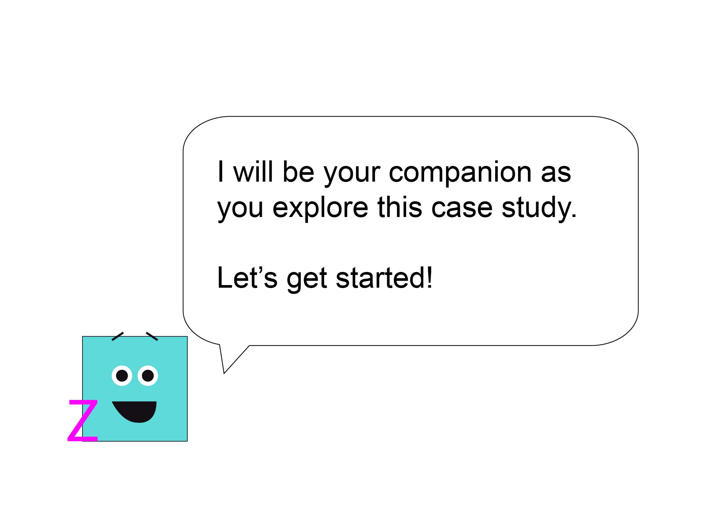

❮❯
Drag slider or use arrow keys
2026
Design System
WCAG 2.1 AA
Gamification
Modular Course Component System
Scalable design system & course suite engineered to support interdisciplinary student progression across a 6 course curriculum. Features responsive UI patterns, WCAG 2.1 AA accessible ARIA components, and character-driven storytelling.
100% WCAG 2.1 AA Compliance across multi-course LMS deployment
View Case Study →